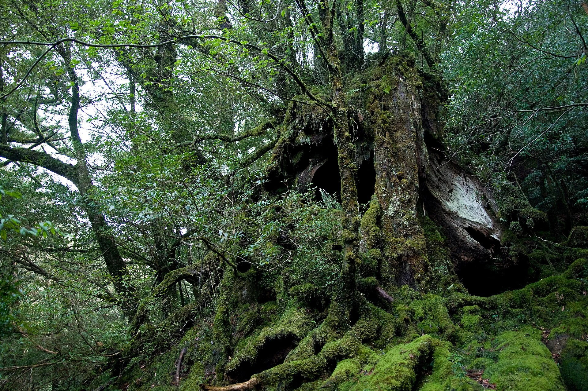

08 / NATUREZA & FESTAS / 森
Há um Japão
que pede outro ritmo.
Florestas, montanhas, ilhas e encontros que acompanham as estações.
Abra este capítulo ↓TERRITÓRIOS PARA CONTEMPLAR
Paisagem também
é relação.
Lugares vividos por comunidades.
Conhecer é também cuidar.
ENCONTROS AO LONGO DO ANO
O calendário ganha
outras cores.
Conheça as tradições.
Para datas de uma edição, consulte o organizador.
INSPIRADO NO TANABATA / UM GESTO POÉTICO
Que desejo você
levaria às estrelas?
No Tanabata, tanzaku são tiras de papel que podem receber desejos. Crie aqui um pequeno registro para o seu caderno.
Alguns caminhos
começam com
um desejo.